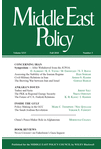

收录于合集

简 介
【原题】 THE MANBIJ ROADMAP AND THE FUTURE OF U.S.-TURKISH RElATIONS
【 作者简介 】 Kilic Burgra Kanat ，SETA研究中心(Foundation for Political, Economic and Social Research)研究室主任，宾夕法尼亚州立大学政治学助理教授。
Jackson Hannon ，SETA研究中心研究助理。
【 编辑 】 高嘉琳
【 校对 】 胡频、庞林立
【 文章来源 】Middle East Policy, Volume 25, Issue 3, Pages 111-123.
【 期刊介绍 】

Middle East Policy成立于1982年，由Wiley-Blackwell代表Middle East Policy Council发行，每季度出版的学术期刊，关注主题为中东地区的外交政策。
【提纲】
-
摘要
-
美土关系的演变
-
漫比季的重要性
-
漫比季合作路线图执行状况
-
漫比季合作路线图的意义
【摘要】
2018年6月4日，美国国务卿迈克•蓬佩奥（Mike Pompeo）和土耳其外交部长梅夫吕特•恰武什奥卢（Mevlut Cavusoglu）宣布美土双方已就叙利亚北部城市漫比季地区相关事务达成合作路线图。漫比季目前由叙利亚民主力量（Syrian Democratic Forces, SDF）占有，集团内成员有来自叙利亚库尔德人民保护联盟（Syrian Kurdish People’s Protection Unites, YPG）的战士，而自2016年伊斯兰国（ISIS）被捕以来，漫比季便一直是美土关系的关键点。
简略介绍漫比季议题背景后，本文将探讨 华盛顿及安卡拉在执行此计划的过程中，可预期的成果及潜在阻碍 。此外，本文亦关注 计划推动的成功对于两北约盟国间双边关系的意义 为何。若此协议能在为双方接受的基础上持续进行，则可视为 双边关系的改善 ，并 可能缓和叙利亚的紧张局势 。
【背景】
**
**
漫比季是位于叙利亚北部的小城市，一直到 2016年8月由叙利亚民主力量（Syrian Democratic Forces, SDF，是一个由美国支持、YPG主导的组织）占领该市前，漫比季一直都被ISIS控制。
本文作者在本段藉由厘清叙利亚民主力量（Syrian Democratic Forces, SDF）、叙利亚库尔德人民保护联盟（Syrian Kurdish People’s Protection Unites, YPG）、叙利亚民主联盟党（Democratic Union Party, PYD）、库尔德工人党（Kurdish Worker’s Party, PKK）和美国及土耳其间的关系，引出双方于过去几年来，涉入当地事务的状况，以及历来针对当地情势采取的策略。简要点出 两国家在尚未提出漫比季合作路线图前的关系消长 ，以及合作路线图 提出前漫比季地区当地的局势 。
**
**
美土关系的演变
早在 2016年7月叙利亚民主力量（Syrian Democratic Forces, SDF）采取行动夺回漫比季前， 漫比季地区局势便一直为美国及土耳其重视 。本文作者将此段分为下列几个部分，试图简化近几年美土双边关系的演变。
一、美土尚未就漫比季地区问题达成协议，且叙利亚民主力量（Syrian Democratic Forces, SDF）尚未采取行动夺回漫比季前：美国在漫比季地区实行的外交政策引起土耳其关注，并作出反应，并开始美土针对漫比季地区问题的一系列互动。此部分作者 着墨于美国、土耳其对于叙利亚库尔德人民保护联盟 （Syrian Kurdish People’s Protection Unites, YPG） 的不同态度 ， 且双方立场如何影响美土两国就漫比季地区问题的互动及策略、协议的调整 。
二、美土已就漫比季地区问题达成协议，且叙利亚民主力量（Syrian Democratic Forces, SDF）已采取行动夺回漫比季后：叙利亚民主力量（Syrian Democratic Forces, SDF）开始行动，至行动结束后，土耳其对于当地情势的关切，并呼吁美国针对漫比季地区问题接续作出下一步处理。作者在本段第一部分详述美土双方对于叙利亚库尔德人民保护联盟（Syrian Kurdish People’s Protection Unites, YPG）的不同态度，而至此段，作者则关注在叙利亚民主力量（Syrian Democratic Forces, SDF）行动成功结束后， 美土两国就先签协议内容，对于 叙利亚库尔德人民保护联盟（Syrian Kurdish People’s Protection Unites, YPG） 积极、消极处理态度如何对双边关系造成影响，导致两国外交关系的紧张，最后再点出双方关系缓解的转折点。
**
**
漫比季的重要性
虽然漫比季地区问题对于美土双方皆是重要议题，然而双方对于当地局势的不同考量，无形之间使得此议题有效解决的困难度大幅提升 。
对于美国而言，不论是奥巴马政府或特朗普政府皆认为，叙利亚可作为在当地打击伊斯兰国（ISIS）的重要成员，而其反恐阵营又以漫比季地区为要；然而对于土耳其来说，同样将伊斯兰国（ISIS）视为一大威胁，但由于曾在其国家边界受过伊斯兰国发起的恐怖攻击，土耳其对于叙利亚民主联盟党（Democratic Union Party, PYD）在叙利亚西北部漫比季地区的势力发展便格外重视。
漫比季合作路线图及未来规划
虽然在 7月4日，美国、土耳其就漫比季合作路线图发表的声明对于细节并没有过多着墨，且双方言论亦时有出入，然而针对叙利亚库尔德人民保护联盟（Syrian Kurdish People’s Protection Unites, YPG）撤出漫比季地区的规划仍有一定的发展。
根据土耳其释出的消息，有关叙利亚库尔德人民保护联盟（Syrian Kurdish People’s Protection Unites, YPG）撤出漫比季地区的规划将分成三部分执行，分别处理 撤离前方案规划 、 撤离方案实施 ，以及 美国、土耳其两国负责漫比季地区的善后事宜 。唯事后美土双方对于叙利亚库尔德人民保护联盟（Syrian Kurdish People’s Protection Unites, YPG）撤离的态度，一方对于时程仅给出模棱两可的答复，另一方则呼吁当按照协议尽早完成撤离，双方仅就两国共同巡守边界事务之时程达成共识，并确定开始实施。
**
**
漫比季合作路线图执行状况
自合作路线图宣布以来，最大的问题当属美土将在何时开始执行协议内容 。如同文章先前所提，美国对于计划施行时程仅提供模糊的答复，而土耳其则积极提出明确日程。因此美国及土耳其在7月12日及13日分别声明双方皆同意且已准备开始漫比季边界巡逻行动的消息一释出，便引起外界认为协定内容可能已被美国、土耳其政府提上日程，且将加强执行力度的猜测。然而，这并非土耳其及美国第一次宣布双方已就叙利亚北部问题达成共识。 根据过去的经验，土耳其及美国间的协议经常不如双方所预期发展，而会以偏离最初规划的状况作结。 以土耳其为例， 2016年提出针对叙利亚民主力量（Syrian Democratic Forces, SDF）行动，在2017年，又提出另一个建议欲取代之。
本文作者点出美土两国目前对于漫比季合作路线图执行的关注点，并提出简要判断，分别为 地方军力结构问题 （Force structure）、 漫比季地方议会 （Manbij Milirtary Council） 重组问题 、 地方政府成员组成问题，和土耳其对于边界地区恐怖组织的军事打击计划。 另外作者还提出 土耳其对于和美国交涉的疑虑 ，以及 美国对于叙利亚自由军 （Free Syrian Army Forces, TFSA） 的关注 。
****本段最后，本文作者就 漫比季合作路线图是否能够成功在当地实施 ，及 将此模式推展到叙利亚各地区的可能性及阻碍 ，分别从 双边互动 、 地缘政治 的观点作出讨论。
**
**
漫比季合作路线图的意义
**** 漫比季合作路线图可被视为近几年来美国土耳其双边关系的重大转折点 。漫比季合作路线图揭示外交机制在处理双边特定棘手议题仍占有一席之地。
根据过去几年的经验，土耳其认为外交途径已不如过去重要，许多重大议题倾向直接透过高层峰会解决，尽管不见得可以弭平争议，然而此次协定证明外交手段仍能够对于双边关系产生影响。本文作者认为，漫比季合作路线图可以被视为美国、土耳其所创立的合作框架对解决双边重大议题的表征。
点击 阅读原文 可获取全文pdf版！
**
**
【更多阅读】 **
**
【一周预告】国政学人下周（10.22-10.26）文章推送安排预告！
【IA杂志· 斯托克斯】特朗普、美国霸权和自由国际秩序的未来
**【SSCI编译】特朗普的国家安全战略：“美国第一”遇上建制派
**
**【IS杂志·阿克顿】纠缠的升级：指挥和控制系统的弱点如何增加意外核战争的风险？
**
**【FA杂志】自由主义秩序的神话——历史偶然到传统观念的演变
**
**【外文编译·IS杂志】中美在东南亚的竞争
——权力转移还是竞争共存？
**
【外交事务】海伦·米尔纳：罗伯特·吉尔平的遗产对今天国际政治的启示
**
**

为方便学人及时接收高质量文章推送
别忘了把国政学人设置 星标 哦~
**
**